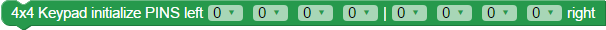

BlocklyProp reference for KEYPAD blocks


 For Propeller Activity Board WX, FLiP and Other board types. Not available for Badge or Scribbler Robot board types.
For Propeller Activity Board WX, FLiP and Other board types. Not available for Badge or Scribbler Robot board types.
These blocks are specifically for the 4 x 4 Matrix Membrane Keypad (#27899) sold by Parallax.
New to this sensor? Click here to see an example schematic and quick Blockly program to help you get started.
4x4 Keypad Initialize

The 4x4 Keypad Initialize block defines the connections between the Keypad's ribbon cable and the Propeller microcontroller's I/O pins. I/O pin availability will vary by board type.
If you forget to use this block in your program, a triangle warning icon will appear on other 4 x 4 keypad blocks as a reminder. 
With the keypad facing you, start match from the leftmost pin to the rightmost pin. The four right most pins MUST be connected to pull-down resistors; use 1 k-ohm to 100 k-ohm resistors for this.
4x4 Keypad Read
The 4x4 Keypad read block provides a number value for the key pressed.
- 0-9 read as values 0 to 9
- A reads as 10
- B reads as 11
- C reads as 12
- D reads as 13
- # (pound sign) reads as 14
- * (asterisk) reads as 15
- No button pressed reads as -1.